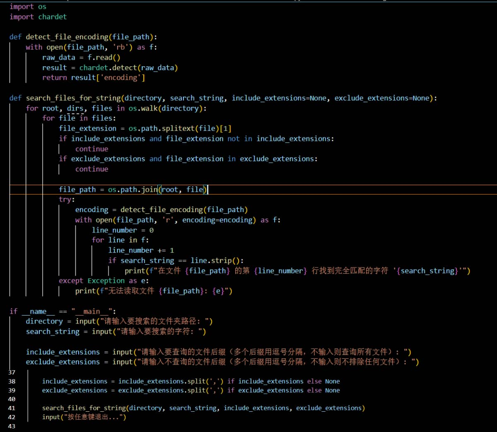

Python脚本批量查询文本中的指定字符
本文制作人员:Al2(SO4)3-硫酸铝
最早更新日期:2024.7.5
最后更新日期:2024.7.5
事情的起因是我最近在改一些JSON文件,但是我只需要改一部分包含"attack"的对应值,一些文件并没有这一部分或者是有很多这样的部分,我需要根据文件介绍更改具体数值,
因此我就想写一个脚本去批量查询指定文件夹内有没有符合要求的文本文件,然后再对这些文件进行修改,这样就可以节省很多时间了.
查看脚本代码
下载这个脚本
代码截图:

使用说明:首先输入你要找的文件夹路径(默认会读取该文件夹里面的所有子文件夹),然后输入要查的值,输入你需要查询的文件类型(后缀),或者输入不要查询的文件类型(后缀),然后等待查询即可.
其它说明:本脚本不一定适合所有场景,您可以在下载之后自行根据您的个人情况更改其代码.作者不对您的使用负任何责任!